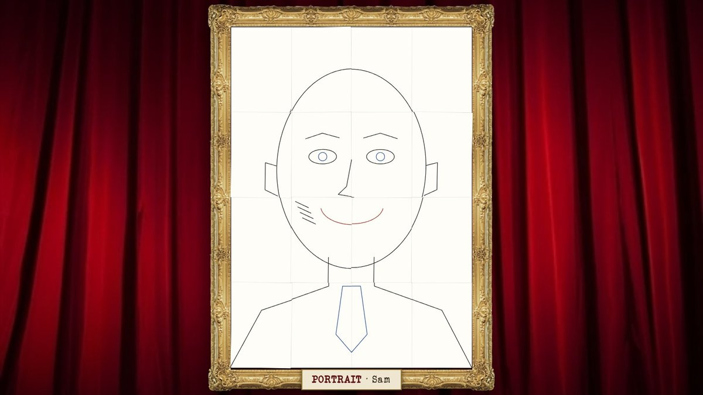
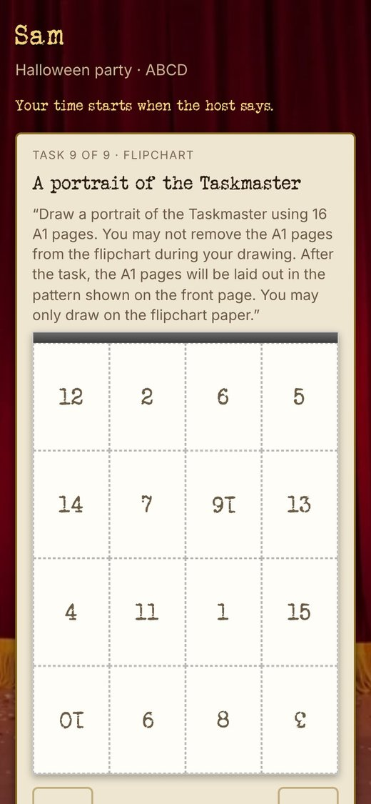
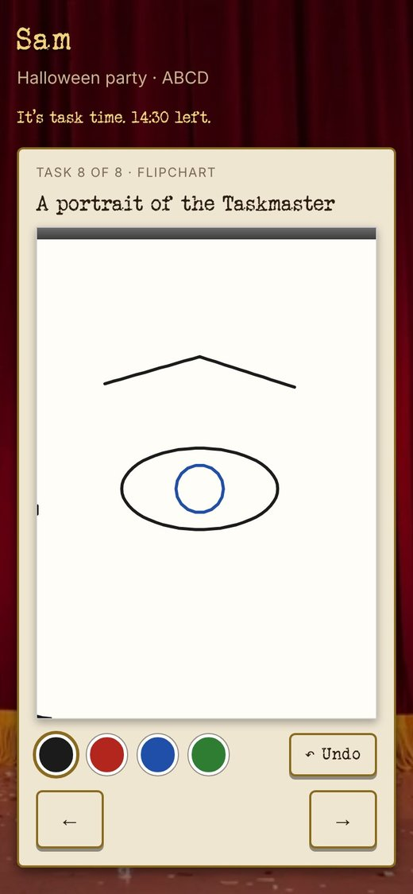
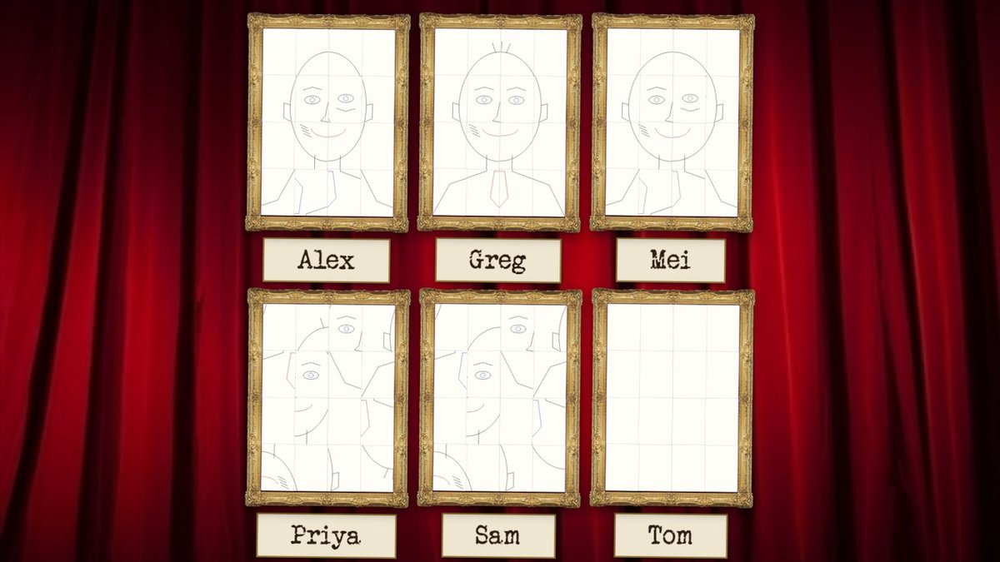
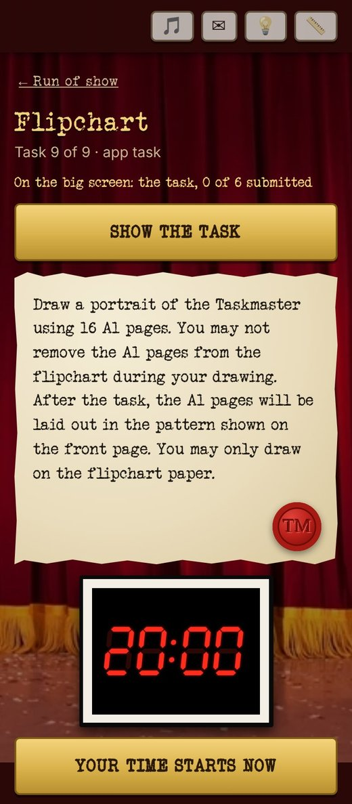
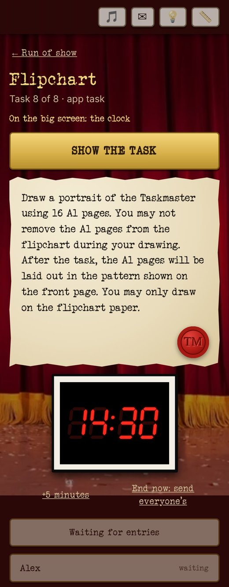

<title>Flipchart</title>
<meta name="description" content="Flipchart, an app task for a Taskmaster party: Everyone draws a portrait of the Taskmaster on sixteen pages, one page at a time, without seeing the others. Then the TV hangs the pages together.">
<link rel="stylesheet" href="task-pages.css">
<main class="task-page">
  <a class="back" href="index.html">← Taskmaster Party</a>
  <section class="hero">
    <div class="eyebrow">Taskmaster · an app task</div>
    <h1>Flipchart</h1>
    <p>Everyone draws a portrait of the Taskmaster on sixteen pages, one page at a time, without seeing the others. Then the TV hangs the pages together.</p>
    <figure class="tv">
      <div class="frame"></div>
      <figcaption class="caption">Sam drew the pages in the wrong order</figcaption>
    </figure>
    <div class="card glance">
      <h3>At a glance</h3>
      <dl>
        <dt>Who plays</dt><dd>Everyone at once.</dd>
        <dt>How long</dt><dd>20 minutes on the clock (10 to 30, you choose)</dd>
        <dt>Your prep</dt><dd>Nothing. The task is written for you.</dd>
        <dt>To bring</dt><dd>Nothing.</dd>
        <dt>Winner</dt><dd>Your call: you give the points.</dd>
      </dl>
    </div>
  </section>

  <section class="moment" id="turn">
    <header>
      <span class="step">1 · The task</span>
      <h2>One page at a time.</h2>
      <p>Each guest gets a flipchart of sixteen pages on their phone. They see one page at a time and never the whole picture, so every portrait comes out wonderfully wrong.</p>
    </header>
    <div class="phones pair">
      <figure>
        <div class="phone"></div>
        <figcaption class="caption">Before: the task</figcaption>
      </figure>
      <figure>
        <div class="phone"></div>
        <figcaption class="caption">During: one page</figcaption>
      </figure>
    </div>
  </section>

  <section class="moment" id="tv">
    <header>
      <span class="step">2 · On the TV</span>
      <h2>Then the pages come together.</h2>
      <p>When the clock runs out, every portrait is hung in the show's pattern, some pages upside down. Whoever missed that on the front page gets a face in pieces.</p>
    </header>
    <figure class="tv">
      <div class="frame"></div>
      <figcaption class="caption">Greg read the front page. Nobody else did.</figcaption>
    </figure>
  </section>

  <section class="moment" id="host">
    <header>
      <span class="step">3 · The host</span>
      <h2>Start the clock. That's it.</h2>
      <p>You start the clock when everyone's ready. While they draw, the TV shows the clock and you can add five minutes or end it early.</p>
    </header>
    <div class="phones pair">
      <figure>
        <div class="phone"></div>
        <figcaption class="caption">Before: start the clock</figcaption>
      </figure>
      <figure>
        <div class="phone"></div>
        <figcaption class="caption">During: the clock</figcaption>
      </figure>
    </div>
  </section>

  <section class="signoff">
    <p>All you need is twenty minutes and a Taskmaster who can take it.</p>
    <h2>Your time starts now.</h2>
    <nav class="more">
      <a href="tasks.html">← All the tasks</a>
      <a href="headshot.html">Next: Headshot →</a>
    </nav>
  </section>
</main>
